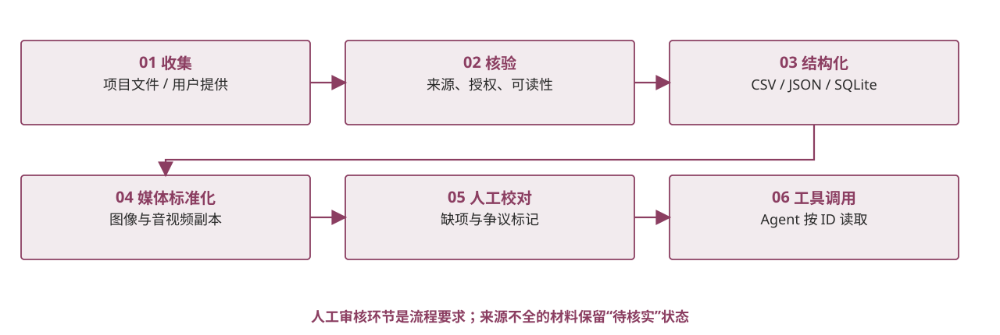

（二）数据收集与处理预处理：让素材可教、可查、可用
从原始文件到 Agent 输入，先检查可读性、路径、格式、缺失字段与来源；不确定内容保留待校对状态，再生成可供页面和工具读取的结构化数据。

证据与状态 当前代码已实现部分文件校验、图像预处理和本地素材读取；文化专家审核并未自动完成。
从原始文件到 Agent 输入，先检查可读性、路径、格式、缺失字段与来源；不确定内容保留待校对状态，再生成可供页面和工具读取的结构化数据。

证据与状态 当前代码已实现部分文件校验、图像预处理和本地素材读取；文化专家审核并未自动完成。